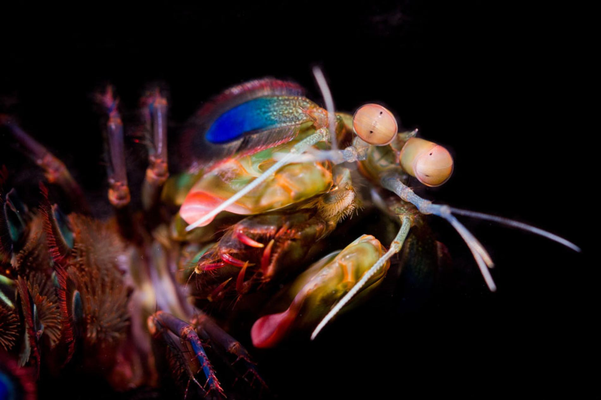
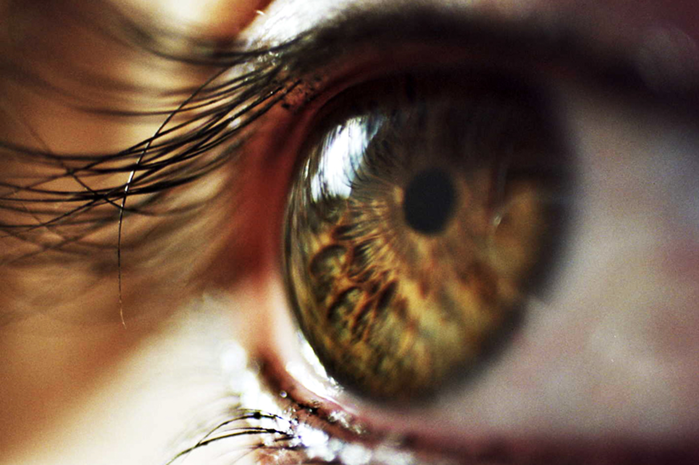
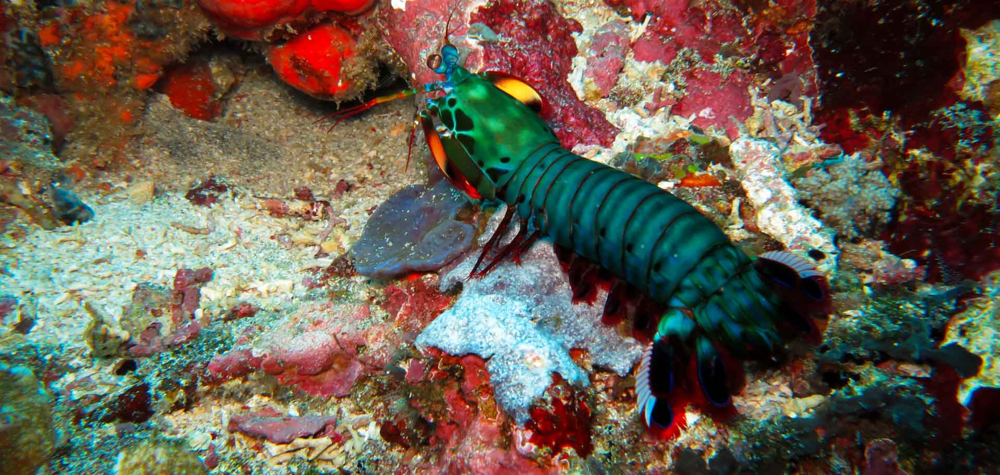

Fatos sobre o Stomatopoda
Os Grandes Olhos

A retina contém dois tipos de células fotorreceptoras: os cones e os bastonetes.
Bastonetes (Rods) são responsáveis por nos fazer enxergar movimentos e luz
Já os Cones, nos permitem enxergar cores.
Então antes de entendermos a incrivelbilidade
do nosso amiguinho boxeador -
Odontodactylus scyllarus, temos que saber sobre alguns "Cones".
- Cachorros têm apenas 2 receptores em seu cones, azul e verde.
-
Nós Seres-humanos, temos 3 receptores, azul,
verde e vermelho.
Isso nos permite enxergar mais duas cores, - sabe quais? - isso, laranja e roxo. -
Nossas amiguinhas
"Manteigas Voadoras"borboletas, são capazes de enxergar 5 cores, azul, verde e vermelho e duas outras que não podemos imaginar como são, fora a combinação que essa quantidade proporciona. São tantos spectruns de cores que nosso cérebro sequer consegue processar. Impressionado?! - Por fim, o grande campeão, sim, ele, o Stomatopoda tem a capacidade de enxergar não 2, não 3, não 5, mas INCRÍVEIS 16 cores. Sério, não sei o que dizer além de que estou superultramegablaster - se é que isso possa ser uma palavra - impressionado.
| Classificação científica |
|
| Reino: | Animalia |
| Filo: | Arthropoda |
| Subfilo: | Crustacea |
| Classe: | Malacostraca |
| Subclasse: | Hoplocarida |
| Ordem: | Stomatopoda Latreille, 1817 |
Paz e Amor

Minhas Senhoras e meus Senhores!
O Mundo é um lugar lindo, cheio de lindas cores e maravilhas como eu. Sejamos amoresos, amigaveis e gent...
Você não acreditou nesse papo de pacifista, certo?! Pois é, eu também não!
Sim, o Stomatopoda é um verdadeiro pesadelo dos mares e provavelmente o mais criativo quando a questão é violência. São animais que apresentam comportamentos sociais muito variados, desde ameaças visuais contra predadores até comportamentos de côrte. De acordo com a anatomia da sua pata raptorial é possível distinguir entre dois grupos funcionais, as perfuradoras (spearers) ou as esmagadoras (smashers). As grandes campeãs dos mares, tais como exemplares de Odontodactylus scyllarus, são capazes de desferir um dos mais rápidos e violentos golpes do reino animal, um soco que pode apresentar a velocidade de um tiro calibre .22, equivalente a 720km/h e uma força de impacto de 60 kg/cm². Essa força esmagadora é a responsável pelo seu título de "lagosta-boxeadora" e é capaz de facilmente quebrar a carapaça de um caranguejo, as conchas duras e calcificadas de gastrópodes ou até mesmo quebrar o vidro reforçado de um aquário.